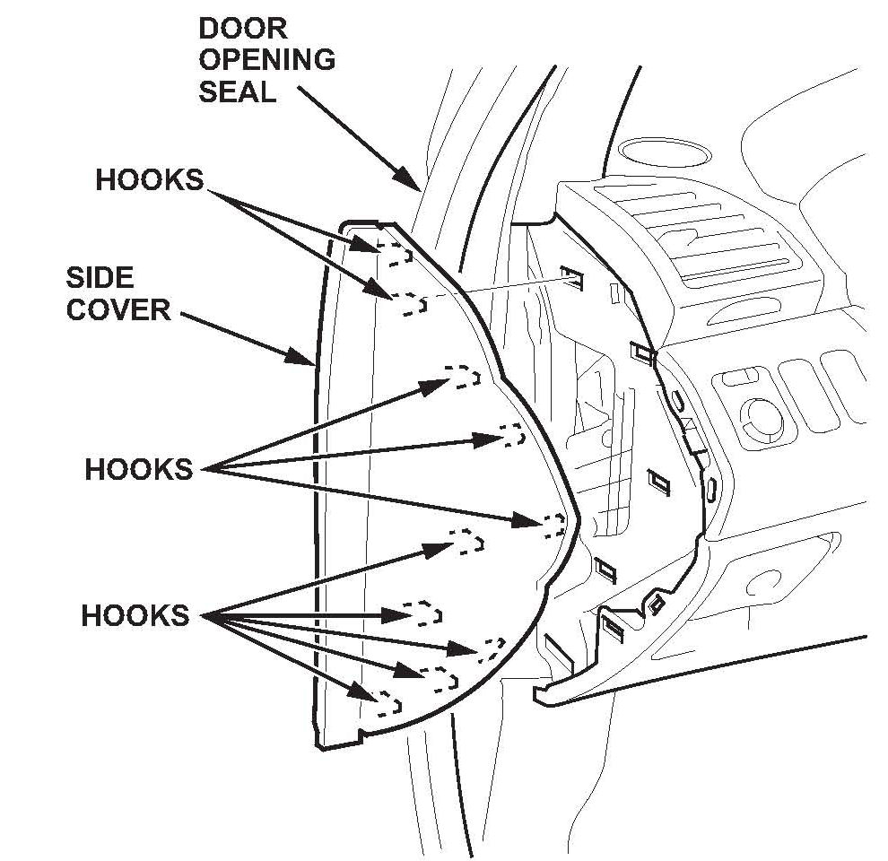
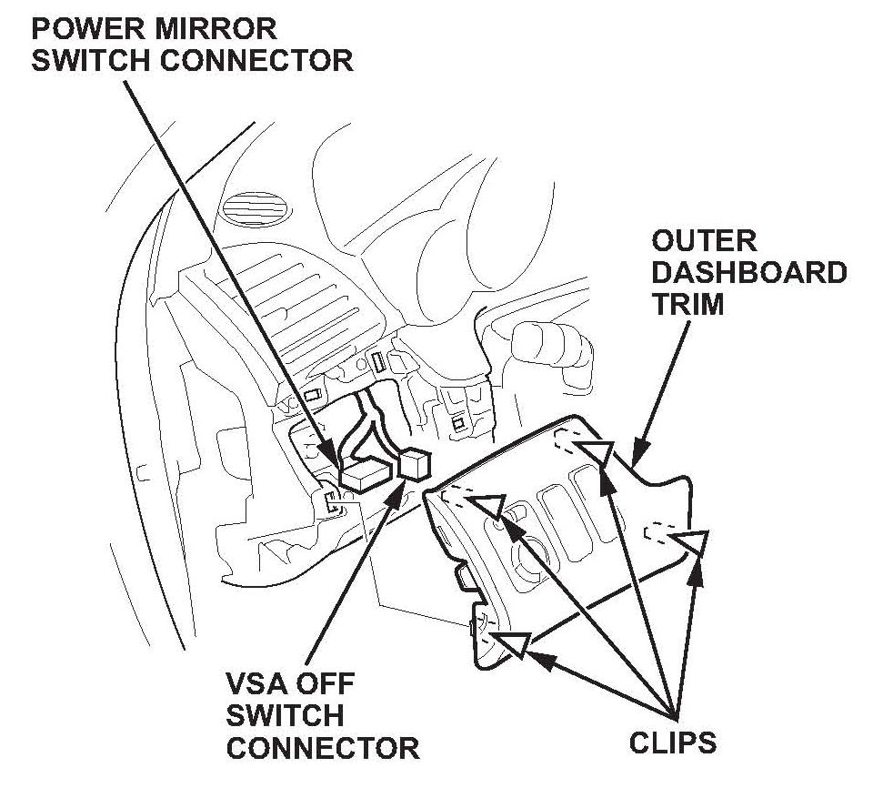
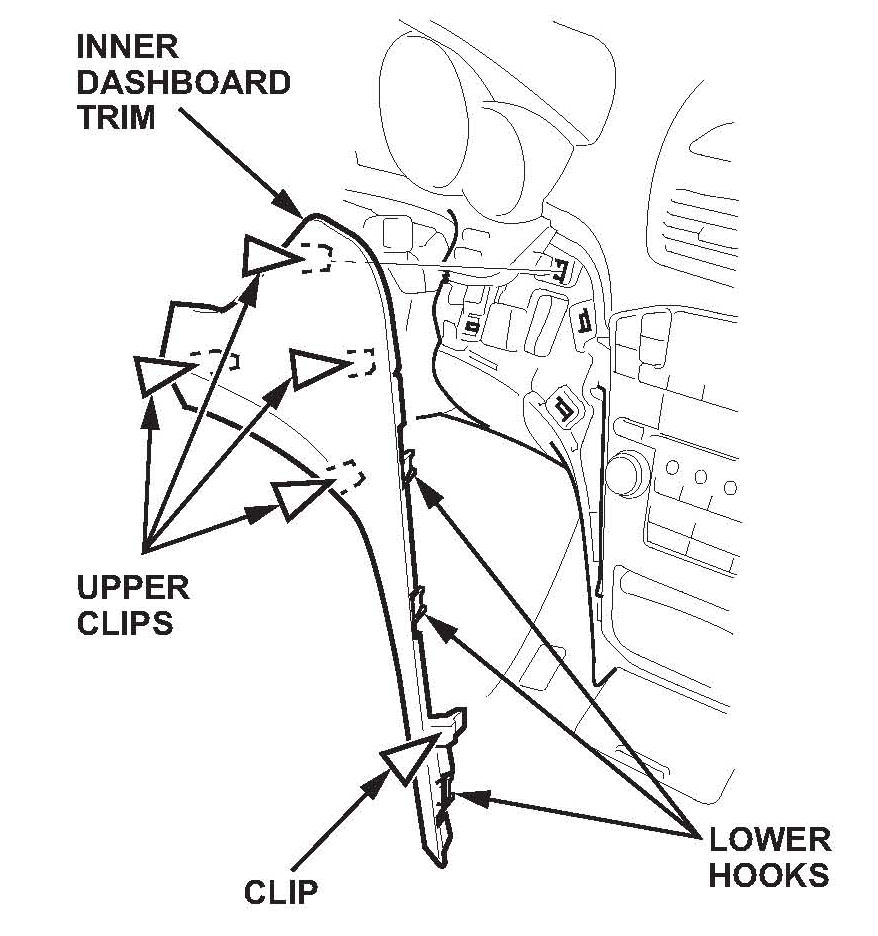
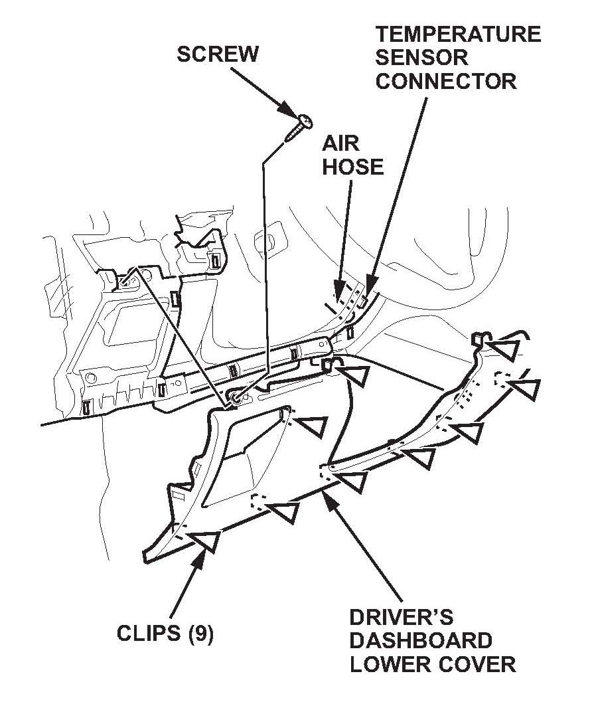
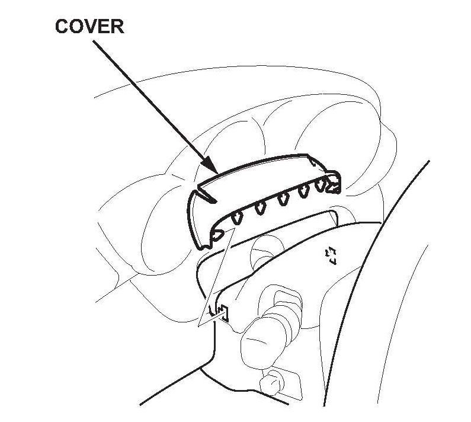
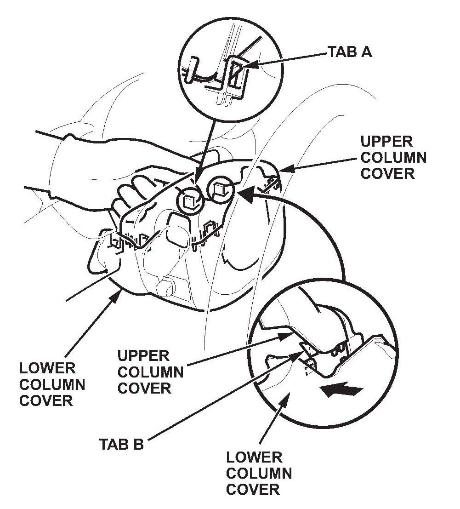
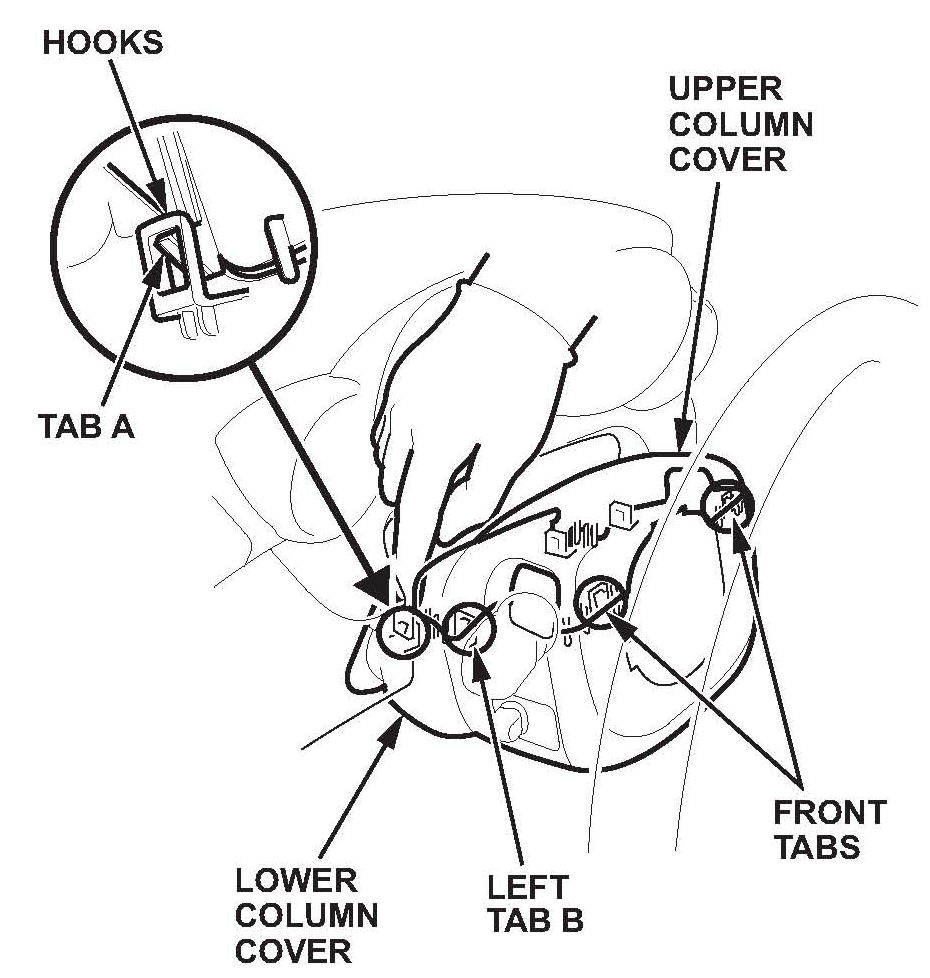
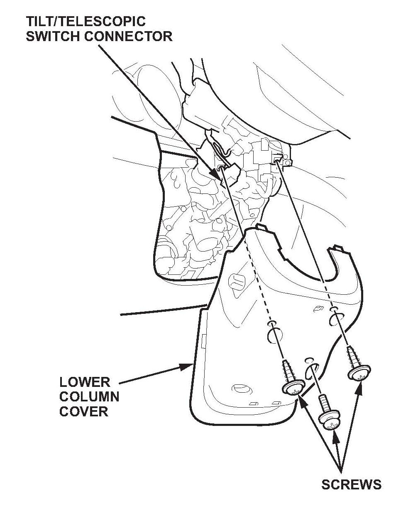
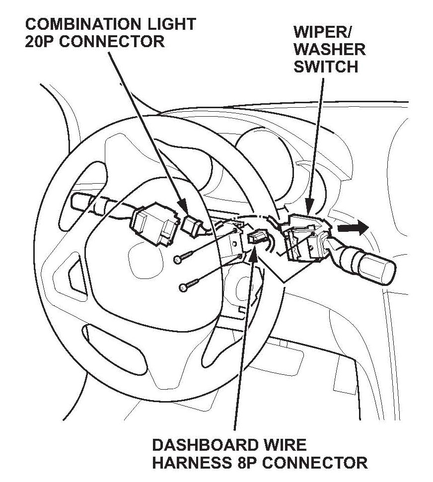

Wipers - Wipers Turn Themselves On /Won't Turn Off
10-011May 14, 2010
Applies To:
2007-09 MDX - ALL
Windshield Wipers Intermittently Come On By Themselves Or Will Not Go Off
SYMPTOM
The windshield wipers intermittently come on by themselves or they cannot be turned off.
CORRECTIVE ACTION
Replace the wiper/washer switch.
PARTS INFORMATION
Wiper Switch Assembly: P/N 35256-STX-305
WARRANTY CLAIM INFORMATION
Operation Number: 728130
Flat Rate Time: 0.3 hour
Failed Part: P/N 35256-STX-A01
Defect Code: 03214
Symptom Code: 03220
Skill Level: Repair Technician
REPAIR PROCEDURE
1. Open the front door, and adjust the steering column upward.

2. Pull out the front door opening seal as needed.
3. Gently pull out the front edge of the driver's dashboard side cover, and pry the rear edge with a trim tool to release the hooks, then remove the side cover.

4. Gently pull out the driver's outer dashboard trim to detach the clips.
5. Disconnect the power mirror switch connector and the VSA OFF switch connector, then remove the panel.

6. Gently pull out by hand along the edge beside the audio unit to release the lower hooks and the clip. Then detach the upper clips.

7. Remove the screw from the driver's dashboard lower cover, then pull out on the bottom of the cover to release the clips. Disconnect the temperature sensor connector and the air hose, then remove the cover.

8. Remove the cover.

9. Release tab A on the right side of the upper column cover with your finger.
10. Release tab B on the right side of the upper column cover by pushing in on the lower column cover.

11. With the right side of the upper column cover pulled slightly apart from the lower column cover, release tab A on the left side of the upper column cover with your finger.
12. Remove the cover by lightly pulling it up while releasing the left tab B and the front tabs on the upper column cover.

13. Remove the three screws, and disconnect the tilt/telescopic switch connector, then remove the lower column cover.

14. Disconnect the combination light switch 20P connector and dashboard wire harness 8P connector from the wiper/washer switch.
15. Remove the two screws, then slide out the wiper/washer switch.
16. Install the new wiper/washer switch. Reconnect the light switch and the dashboard wire harness.
17. Reinstall the column covers, the dashboard lower cover, the inner dashboard trim, and the dashboard side cover.
^ Replace any damaged clips.
^ Push all clips and hooks securely into place.
^ Make sure all connectors are plugged in properly.

Disclaimer